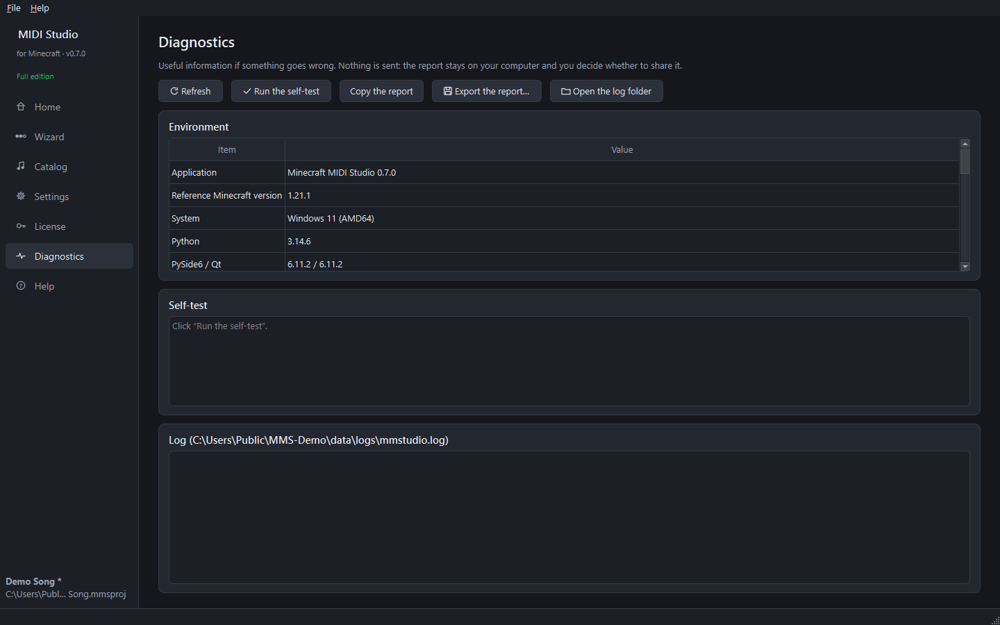

Step 14 — Troubleshooting
No sound in game
- Did you open the world after installing? The world's resource pack is loaded when the world opens.
- Watch for a pack error message when the world opens. Run Check (step 11) again: it must say Check passed.
- Check the game's Jukebox/Note Blocks volume slider (Options → Music & Sounds).
- Try
/function music:<name>/volume {v:150}. - In the log of Minecraft (
.minecraft\logs\latest.log), a line “Unable to play unknown soundEvent” means the resource pack is not loaded: generate and install again.
The structure is not built
- Commands must be allowed (operator / cheats).
- Choose the place first:
/function music:<name>/wand, then right-click a block with the wand. - If the area could not be loaded in 30 s, nothing is changed: try again.
The wand does nothing
- Hold it in your main hand and aim at a block less than 64 blocks away (the sky or water alone do not count).
- A right-click on a block that opens (chest, door, lever…) uses that block instead of the wand: aim at an ordinary block.
- Each song has its own wand: take the one of the right song (
/function music:<name>/wand). - A structure already built does not move:
/function music:<name>/removefirst.
“Official Minecraft sounds not downloaded”
The first download (about 41 MB from Mojang's servers) could not be done, usually because there is no internet. Check the connection, then Settings → Official Minecraft sounds → Download now. An antivirus or a company firewall may also block piston-meta.mojang.com and resources.download.minecraft.net.
The license does not activate
- “This key was bought for the Google account …”: sign in with the Google account shown (its first letter and domain are displayed). If you paid with another address, ask the author for a key for your Google address.
- “No license is stored in the Google account”: use Activate with Google with the key received by e-mail (the first time); then Get my license back works on your other computers.
- Google's page does not come back to the software: keep the software open while signing in, and let your firewall accept the local connection (address
127.0.0.1). - “This activation comes from another computer”: normal after copying your settings; click Get my license back with Google.
A world does not appear in the list
- It appears by itself after a moment; Refresh the list forces a search.
- For an unusual game folder: Add an instance folder… (step 1) or Settings → Added instances.
The software shows an error
Open Diagnostics: it shows the detected environment, runs a self-test and shows the log. Copy the report or Export the report… to share it when you ask for help. Nothing is ever sent automatically.

Undo everything in a world
- In game, for each song:
/function music:<name>/remove(removes the structure), then/function music:<name>/uninstall. - Then, in the software (step 10): Remove a song from the world…. Or by hand: delete
datapacks/music_<name>.zip, themmstudio_packsfolder and the world'sresources.zip(orresourcepacks/resources.zip). - Or restore the ZIP backup made before the installation.